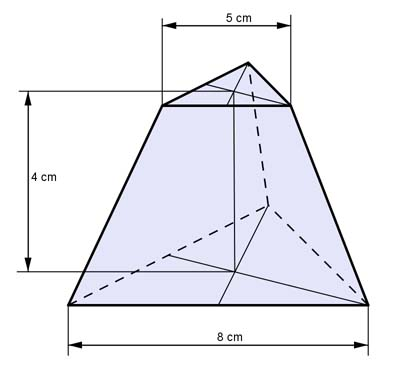
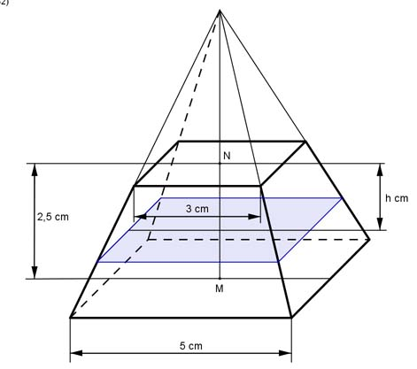
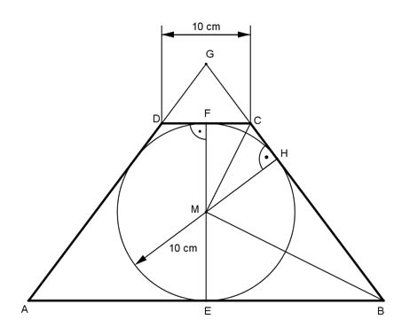

Aufgabe 248
Wie groß ist die Oberfläche O des dargestellten Körpers?

Wie löse ich Matheaufgaben?
Volumen
Sie sehen ein gelbes Eingabefeld und die
Schalter: Prüfen und Lösung.
Tragen Sie Ihr Ergebnis ein, prüfen Sie es
oder starten Sie eine Lösung.
Aufgabe 248 Wie groß ist die Oberfläche O des dargestellten Körpers?
Aufgabe 249 Wie groß ist die Oberfläche O des dargestellten Körpers?
O = cm2
Aufgabe 250 Wie groß sind das Volumen V und die Oberfläche O des dargestellten Körpers?
Aufgabe 251 Wie groß sind das Volumen V und die Oberfläche O des dargestellten Körpers? O = O = cm2
Aufgabe 252 Wie groß sind das Volumen V und die Mantelfläche M des quadratischen Pyramidenstumpfes?
Aufgabe 253 Wie groß sind das Volumen V und die Oberfläche O desdargestellten Körpers? O =
V = cm3
Aufgabe 254 Wie groß sind das Volumen V und die Oberfläche O des Pyramidenstumpfes mit regelmäßigen Sechsecken als Grund- und Deckfläche, deren Mittelpunkte senkrecht übereinander liegen?
Aufgabe 255 Wie groß sind das Volumen V und die Mantelfläche M des Pyramidenstumpfes mit gleichseitigen Dreiecken als Grund- und Deckfläche, deren Mittelpunkte senkrecht übereinander liegen?  V = cm3
Aufgabe 256 Wie groß ist h, wenn das Volumen des Pyramidenstumpfes halbiert werden soll? 
Aufgabe 257 Wie groß sind das Volumen V und die Mantelfläche M des dargestellten Kegelstumpfes? Wie groß ist der Mittelpunktswinkel α seiner Abwicklung?
α = °
Aufgabe 258 Wie groß sind die Höhe h und der Mantel M eines geraden Kegelstumpfes, wenn der kleinere Radius 8 cm, der größere 12 cm und sein Volumen 10 l betragen?
Aufgabe 259 Wie groß ist das Volumen eines geraden Kegelstumpfes, wenn der kleinere Radius 7,2 cm, der größere 9,6 cm und sein Mantel 20 dm2 betragen? V = cm3
Aufgabe 260 Einer regelmäßigen achtseitigen Pyramide fehlt die Spitze. Wie hoch war sie ursprünglich, wenn der entstandene Stumpf noch 1,2 m hoch ist, seine Grundkante 30 cm und seine Deckkante 10 cm betragen?
Aufgabe 261 Wie groß ist das Volumen V des dargestellten quadratischen Pyramidenstumpfes, wenn AP = AC/5 ist?
V = cm3
Aufgabe 262 Ein quadratischer Pyramidenstumpf mit der Grundseite 4 cm und der Deckseite 3 cm soll gleiche Höhe und gleichesVolumen wie eine quadratische Pyramide haben. Wie groß ist deren Grundseite c?
Aufgabe 263 Wie groß ist das Volumen V des quadratischen Pyramidenstumpfes, dessen mittiger Achsenschnitt im Bild dargestellt ist?  V = cm3
Aufgabe 264 Wie groß sind das Volumen V und die Oberfläche O des dargestellten quadratischen Pyramidenstumpfes?
Aufgabe 265 Die Schnittfläche A unterteilt den regelmäßigen dreiseitigen Pyramidenstumpf in 2 Teilkörper. Wie groß sind die Schnitt-fläche A und das Volumen V des kleineren Teilkörpers?
V = cm3
Aufgabe 266 Wie groß ist a) x, wenn r1, r2 und h bekannt sind. b) r2, wenn x, r1 und h bekannt sind c) x, wenn r1 : r2 und h bekannt sind d) x, wenn die blaue Kreisringfläche so groß wie die Grundfläche des Zylinders ist und h bekannt ist e) x, wenn der unter der gemeinsamen Schnittfläche liegende Zylinder das gleiche Volumen wie der darüberliegende Kegel hat und h bekannt ist f) x, wenn der über der gemeinsamen Schnittfläche liegende Kegel das gleiche Volumen wie der darunter liegende Kegelstumpf minus Zylinder hat und r1, r2 und h bekannt sind?